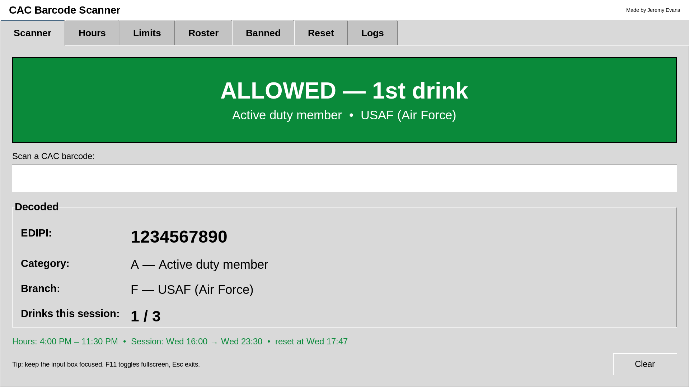
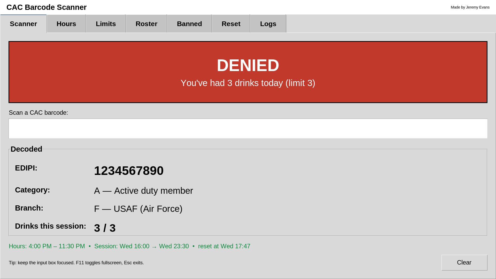
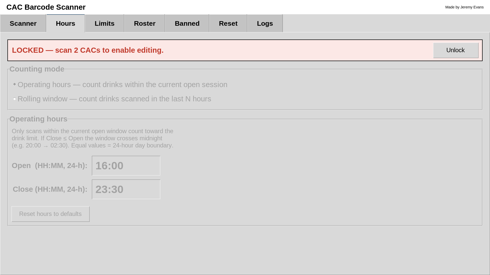
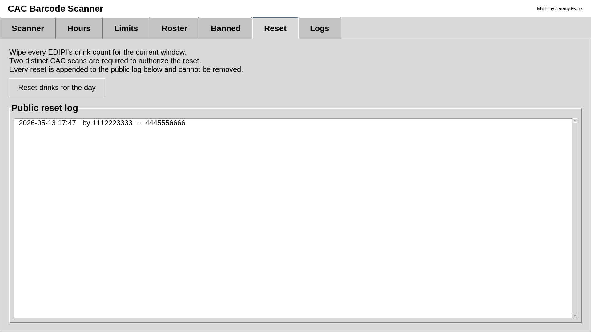

5Unlock settings
LOCKED by default.- Open any settings tab and click Unlock.
- Scan two different authorizing CACs.
- Banner turns UNLOCKED; edits auto-save.
- Click Lock when done — every change is logged.
Aim the USB scanner at the Code 39 strip on the back of the Common Access Card. The app fires automatically when the scanner has sent all 18 characters.
Each scan decodes to EDIPI (10-digit DoD ID), category (PCC), and branch.



